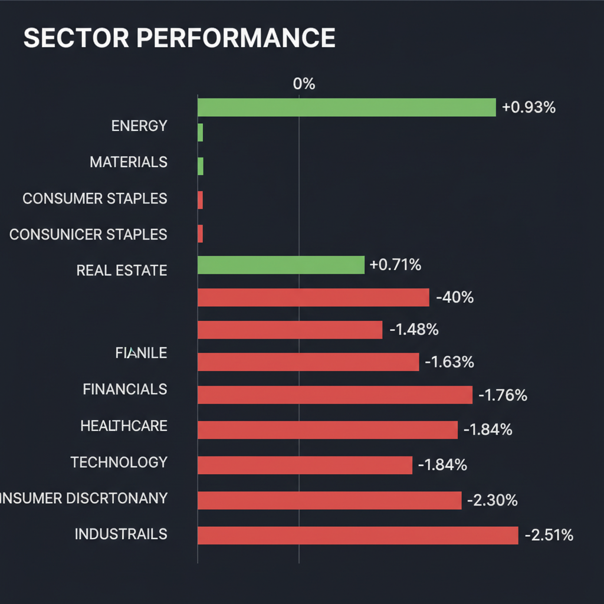
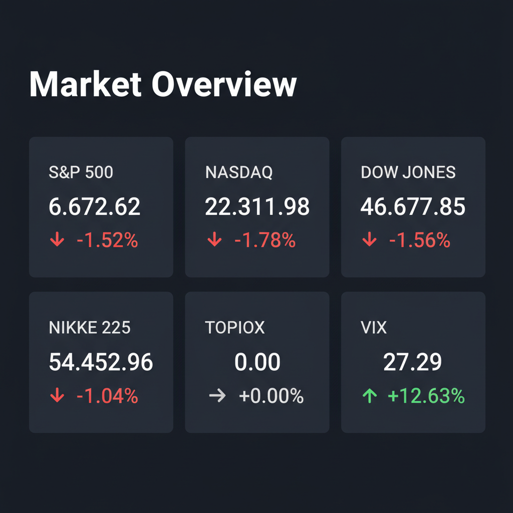

Daily Investment Report - 2026-03-13
Generated: 2026/3/13 8:12:59


チームミーティングでの各エージェントの深い分析と激しい議論を踏まえ、投資家の皆様が即座にアクションを取れるよう、要点を整理した最終投資レポートをお届けします。
1. エグゼクティブサマリー
* 現在の市場は、AIハイテク株への過度な資金集中と「高金利の長期化（Higher for Longer）」への警戒感から、明確なリスクオフ（回避）とセクターローテーションの局面に入っています。
* VIX指数が27台へ急騰し相場のボラティリティが拡大する中、資金は高PERのグロース株から、実需とインフレ耐性を持つ「公益・エネルギー」や「日本のバリュー株」へ急速に逃避しています。
* 投資家は直ちに現金比率を高めてポートフォリオを防衛しつつ、パニック売りで放置されている「黒字でキャッシュリッチなインフラ・中小型株」の底打ちを冷静に狙う戦略が求められます。
2. 注目銘柄リスト
大型ハイテク株（NVIDIA、Apple等）はバリュエーションの限界とAI投資のROI（費用対効果）への疑念から調整リスクが高いため除外し、今後の市場の主役になり得る「中小型株・隠れた成長株」を厳選して分類しました。
強気（買い推奨）
*
Primoris Services Corporation（PRIM） [時価総額: 約32億ドル]: AIデータセンター増設に伴う深刻な電力・通信インフラのアップグレード需要を直接享受しながら、PER15倍台と安全マージンが確保されているため。
*
ダイダン（1980） [時価総額: 約850億円]: 半導体工場の国内回帰に伴う高度なクリーンルーム等の設備工事需要が業績を牽引し、低PER・低PBRかつ豊富な手元現金を背景とした株主還元が魅力的な良質バリュー株であるため。
*
Innodata（INOD） [時価総額: 約5億ドル]: 大規模言語モデル（LLM）向けの高品質データアノテーションに特化し年率40%超の成長を見せつつ、すでに黒字化を達成し無借金であるため、高金利下でも安全なAIテンバガー候補として評価。
*
ふくおかフィナンシャルグループ（8354） [時価総額: 約7,000億円]: 日銀の追加利上げに伴う純利ざや改善の恩恵に加え、TSMC進出による九州エリアの強力な融資成長シナリオを持ち、ダウンサイドリスクが限定的であるため。
中立（様子見）
*
Fluence Energy（FLNC） [時価総額: 約40億ドル]: AI電力網に不可欠な蓄電池とAIソフトウェアを展開し直近で黒字化を達成した優良企業ですが、マクロの逆風（高金利）下では、チャート上で明確な反転シグナル（底打ち）を確認するまでエントリーを待つべきです。
弱気（警戒）
*
Recursion Pharmaceuticals（RXRX） [時価総額: 約15〜20億ドル]: AI創薬のポテンシャルは高くメガファーマとの提携もありますが、巨額の先行投資による赤字が継続しており、信用収縮が懸念される高金利環境下では資金ショートや株価暴落のリスクが極めて高いため。
*
ABEJA（5574） [時価総額: 約100億円台]: 日本企業のAI実装支援として期待値は高いものの、予想PERが50倍を超えており、現在のボラティリティが急拡大する相場環境においてはバリュエーション調整（下落）の直撃を受けやすいため。
3. セクター推奨ランキング
*
1位: 公益事業（Utilities）
AIデータセンターの稼働に伴う「爆発的な電力需要」という強力な成長テーマを獲得しつつ、相場下落時のディフェンシブな逃避先としてテクニカル的にも資金流入が明確なため。
*
2位: エネルギー（Energy）
中東の地政学リスクに対するヘッジ機能に加え、インフレ高止まり局面において強固なフリーキャッシュフローを創出するバリューセクターとして下値が堅いため。
*
3位: 金融（Financials / 特に日本株）
日銀の「金利のある世界」への歴史的転換による利ざや改善と、東京証券取引所の要請に基づく大規模な自社株買い・増配のダブルエンジンが継続しているため。
*
4位: ヘルスケア（Healthcare）
景気減速懸念に対するディフェンシブ性を持ちながら、GLP-1（肥満症治療薬）や医療機器など、マクロ経済に左右されにくい独自のハイパーグローストレンドを有するため。
*
5位（最下位）: 一般消費財（Consumer Discretionary）
決算で低所得者層を中心とした「インフレ疲れ」と消費の冷え込みが顕在化しており、クレジットカード延滞率の上昇などを踏まえると、真っ先に資金を引き揚げるべき危険なセクターです。
4. 今週の注目イベント
* [今週水曜日] 米国消費者物価指数（CPI）の発表（インフレの粘着性とFRBの利下げ時期を占う最重要指標）
* [今週金曜日] 米国雇用統計の発表（労働市場の悪化によるスタグフレーション懸念の有無を確認）
* [随時] FRB高官による金融政策の先行きの発言（Higher for Longerのスタンス確認）
* [随時] 日銀要人による国債買い入れ減額および追加利上げに関する発言（急激な円高リスクの火種）
5. リスク要因
*
AIバブル崩壊と集中リスクの逆回転: メガテック企業の巨額な設備投資（Capex）に対する収益化（ROI）の遅れが意識され、市場を牽引してきた少数のハイテク株から資金が一斉に流出し、指数全体が暴落するリスク。
*
高金利の長期化と信用収縮: インフレの高止まりによりFRBが利下げに動けず、資金調達コストの増大が赤字の中小型グロース株や過剰債務企業の倒産危機（バリュートラップ）を引き起こすリスク。
*
スタグフレーションの顕在化: 労働市場の減速（失業率の上昇）とインフレの再燃が同時に発生し、株式と債券が同時に売られる逃げ場のないパニック相場が到来するリスク。
*
円キャリートレードの暴力的な巻き戻し: 日銀の追加利上げと米国の景気減速（金利低下）が重なることで、1ドル=130円台に向けた急激な円高が進行し、日本企業の業績上方修正期待が剥落して日本株が暴落するリスク。
6. アクションアイテム
*
現金比率の大幅な引き上げ: VIX27超えという市場の異常事態を重く受け止め、株式のポジションサイズを直ちに通常の半分程度に縮小し、現金（または5%超の利回りを持つ短期米国債）の比率を30%〜40%へ引き上げてください。
*
ポートフォリオのディフェンシブ・シフト: 利益が乗っている高PERのハイテク株や一般消費財セクターを利益確定し、実需とインフレ耐性を持つ「公益・エネルギーセクター」や「日本の金融株」へ資金をローテーションさせてください。
*
ストップロスの厳格な設定: ボラティリティの拡大による一時的なノイズで致命傷を負わないよう、現在保有している全銘柄に対して、50日移動平均線を明確に下抜けた水準、あるいは現在値の5〜8%下に機械的な損切り（エグジット）ラインを設定してください。
*
ダウンサイド・ヘッジの構築: 市場全体の20〜30%のドローダウン（最悪のシナリオ）に備え、S&P 500等のファー・アウト・オブ・ザ・マネーのプットオプションを購入するか、保有株に対するカバード・コール戦略を実行して下落耐性を高めてください。
*
優良中小型株の監視（Buy the dipの準備）: パニック売りで不当に売られている、PERが低くキャッシュフローが潤沢な「インフラ・電力関連の中小型株（PRIMやダイダン等）」を監視リストに入れ、MACDのゴールデンクロス等の明確なテクニカル反転シグナルを確認した後にのみ、打診買いを開始してください。